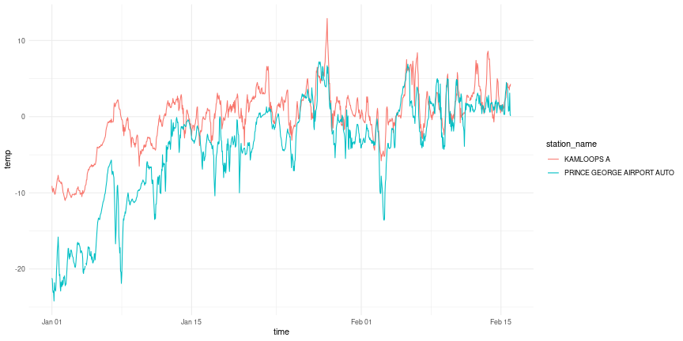

Stations
weathercan includes the function stations()
which returns a list of stations and their details (including
station_id).
## # A tibble: 6 × 16
## prov station_name station_id climate_id WMO_id TC_id lat lon elev tz interval start end normals normals_1981_2010 normals_1971_2000
## <chr> <chr> <dbl> <chr> <dbl> <chr> <dbl> <dbl> <dbl> <chr> <chr> <dbl> <dbl> <lgl> <lgl> <lgl>
## 1 AB DAYSLAND 1795 301AR54 NA <NA> 52.9 -112. 689. Etc/GMT+7 day 1908 1922 FALSE FALSE FALSE
## 2 AB DAYSLAND 1795 301AR54 NA <NA> 52.9 -112. 689. Etc/GMT+7 hour NA NA FALSE FALSE FALSE
## 3 AB DAYSLAND 1795 301AR54 NA <NA> 52.9 -112. 689. Etc/GMT+7 month 1908 1922 FALSE FALSE FALSE
## 4 AB EDMONTON CORONATION 1796 301BK03 NA <NA> 53.6 -114. 671. Etc/GMT+7 day 1978 1979 FALSE FALSE FALSE
## 5 AB EDMONTON CORONATION 1796 301BK03 NA <NA> 53.6 -114. 671. Etc/GMT+7 hour NA NA FALSE FALSE FALSE
## 6 AB EDMONTON CORONATION 1796 301BK03 NA <NA> 53.6 -114. 671. Etc/GMT+7 month 1978 1979 FALSE FALSE FALSE## Rows: 26,382
## Columns: 16
## $ prov <chr> "AB", "AB", "AB", "AB", "AB", "AB", "AB", "AB", "AB", "AB", "AB", "AB", "AB", "AB", "AB", "AB", "AB", "AB", "AB", "AB", "AB", "AB", …
## $ station_name <chr> "DAYSLAND", "DAYSLAND", "DAYSLAND", "EDMONTON CORONATION", "EDMONTON CORONATION", "EDMONTON CORONATION", "FLEET", "FLEET", "FLEET", …
## $ station_id <dbl> 1795, 1795, 1795, 1796, 1796, 1796, 1797, 1797, 1797, 1798, 1798, 1798, 1799, 1799, 1799, 1800, 1800, 1800, 1801, 1801, 1801, 1802, …
## $ climate_id <chr> "301AR54", "301AR54", "301AR54", "301BK03", "301BK03", "301BK03", "301B6L0", "301B6L0", "301B6L0", "301B8LR", "301B8LR", "301B8LR", …
## $ WMO_id <dbl> NA, NA, NA, NA, NA, NA, NA, NA, NA, NA, NA, NA, NA, NA, NA, NA, NA, NA, NA, NA, NA, NA, NA, NA, NA, NA, NA, NA, NA, NA, NA, NA, NA, …
## $ TC_id <chr> NA, NA, NA, NA, NA, NA, NA, NA, NA, NA, NA, NA, NA, NA, NA, NA, NA, NA, NA, NA, NA, NA, NA, NA, NA, NA, NA, NA, NA, NA, NA, NA, NA, …
## $ lat <dbl> 52.87, 52.87, 52.87, 53.57, 53.57, 53.57, 52.15, 52.15, 52.15, 53.20, 53.20, 53.20, 52.40, 52.40, 52.40, 54.08, 54.08, 54.08, 53.52,…
## $ lon <dbl> -112.28, -112.28, -112.28, -113.57, -113.57, -113.57, -111.73, -111.73, -111.73, -110.15, -110.15, -110.15, -115.20, -115.20, -115.2…
## $ elev <dbl> 688.8, 688.8, 688.8, 670.6, 670.6, 670.6, 838.2, 838.2, 838.2, 640.0, 640.0, 640.0, 1036.0, 1036.0, 1036.0, 585.2, 585.2, 585.2, 668…
## $ tz <chr> "Etc/GMT+7", "Etc/GMT+7", "Etc/GMT+7", "Etc/GMT+7", "Etc/GMT+7", "Etc/GMT+7", "Etc/GMT+7", "Etc/GMT+7", "Etc/GMT+7", "Etc/GMT+7", "E…
## $ interval <chr> "day", "hour", "month", "day", "hour", "month", "day", "hour", "month", "day", "hour", "month", "day", "hour", "month", "day", "hour…
## $ start <dbl> 1908, NA, 1908, 1978, NA, 1978, 1987, NA, 1987, 1987, NA, 1987, 1980, NA, 1980, 1980, NA, 1980, 1986, NA, 1986, 1987, NA, 1987, 1986…
## $ end <dbl> 1922, NA, 1922, 1979, NA, 1979, 1990, NA, 1990, 1998, NA, 1998, 2009, NA, 2007, 1981, NA, 1981, 2019, NA, 2007, 1991, NA, 1991, 1995…
## $ normals <lgl> FALSE, FALSE, FALSE, FALSE, FALSE, FALSE, FALSE, FALSE, FALSE, FALSE, FALSE, FALSE, TRUE, TRUE, TRUE, FALSE, FALSE, FALSE, TRUE, TRU…
## $ normals_1981_2010 <lgl> FALSE, FALSE, FALSE, FALSE, FALSE, FALSE, FALSE, FALSE, FALSE, FALSE, FALSE, FALSE, TRUE, TRUE, TRUE, FALSE, FALSE, FALSE, TRUE, TRU…
## $ normals_1971_2000 <lgl> FALSE, FALSE, FALSE, FALSE, FALSE, FALSE, FALSE, FALSE, FALSE, FALSE, FALSE, FALSE, FALSE, FALSE, FALSE, FALSE, FALSE, FALSE, FALSE,…You can look through this data frame directly, or you can use the
stations_search function:
stations_search("Kamloops")## # A tibble: 40 × 16
## prov station_name station_id climate_id WMO_id TC_id lat lon elev tz interval start end normals normals_1981_2010 normals_1971_2000
## <chr> <chr> <dbl> <chr> <dbl> <chr> <dbl> <dbl> <dbl> <chr> <chr> <dbl> <dbl> <lgl> <lgl> <lgl>
## 1 BC KAMLOOPS 1274 1163779 NA <NA> 50.7 -120. 379. Etc/GMT+8 day 1878 1982 FALSE FALSE FALSE
## 2 BC KAMLOOPS 1274 1163779 NA <NA> 50.7 -120. 379. Etc/GMT+8 month 1878 1982 FALSE FALSE FALSE
## 3 BC KAMLOOPS A 1275 1163780 71887 YKA 50.7 -120. 345. Etc/GMT+8 day 1951 2013 TRUE TRUE TRUE
## 4 BC KAMLOOPS A 1275 1163780 71887 YKA 50.7 -120. 345. Etc/GMT+8 hour 1953 2013 TRUE TRUE TRUE
## 5 BC KAMLOOPS A 1275 1163780 71887 YKA 50.7 -120. 345. Etc/GMT+8 month 1951 2013 TRUE TRUE TRUE
## 6 BC KAMLOOPS A 51423 1163781 71887 YKA 50.7 -120. 345. Etc/GMT+8 day 2013 2023 FALSE FALSE FALSE
## 7 BC KAMLOOPS A 51423 1163781 71887 YKA 50.7 -120. 345. Etc/GMT+8 hour 2013 2023 FALSE FALSE FALSE
## 8 BC KAMLOOPS AFTON MINES 1276 1163790 NA <NA> 50.7 -120. 701 Etc/GMT+8 day 1977 1993 FALSE FALSE TRUE
## 9 BC KAMLOOPS AFTON MINES 1276 1163790 NA <NA> 50.7 -120. 701 Etc/GMT+8 month 1977 1993 FALSE FALSE TRUE
## 10 BC KAMLOOPS AUT 42203 1163842 71741 ZKA 50.7 -120. 345 Etc/GMT+8 day 2006 2023 FALSE FALSE FALSE
## # ℹ 30 more rowsYou can narrow down your search by specifying time intervals (options are “hour”, “day”, or “month”):
stations_search("Kamloops", interval = "hour")## # A tibble: 3 × 16
## prov station_name station_id climate_id WMO_id TC_id lat lon elev tz interval start end normals normals_1981_2010 normals_1971_2000
## <chr> <chr> <dbl> <chr> <dbl> <chr> <dbl> <dbl> <dbl> <chr> <chr> <dbl> <dbl> <lgl> <lgl> <lgl>
## 1 BC KAMLOOPS A 1275 1163780 71887 YKA 50.7 -120. 345. Etc/GMT+8 hour 1953 2013 TRUE TRUE TRUE
## 2 BC KAMLOOPS A 51423 1163781 71887 YKA 50.7 -120. 345. Etc/GMT+8 hour 2013 2023 FALSE FALSE FALSE
## 3 BC KAMLOOPS AUT 42203 1163842 71741 ZKA 50.7 -120. 345 Etc/GMT+8 hour 2006 2023 FALSE FALSE FALSEYou can specify more than one interval:
stations_search("Kamloops", interval = c("hour", "month"))## # A tibble: 21 × 16
## prov station_name station_id climate_id WMO_id TC_id lat lon elev tz interval start end normals normals_1981_2010 normals_1971_2000
## <chr> <chr> <dbl> <chr> <dbl> <chr> <dbl> <dbl> <dbl> <chr> <chr> <dbl> <dbl> <lgl> <lgl> <lgl>
## 1 BC KAMLOOPS 1274 1163779 NA <NA> 50.7 -120. 379. Etc/GMT+8 month 1878 1982 FALSE FALSE FALSE
## 2 BC KAMLOOPS A 1275 1163780 71887 YKA 50.7 -120. 345. Etc/GMT+8 hour 1953 2013 TRUE TRUE TRUE
## 3 BC KAMLOOPS A 1275 1163780 71887 YKA 50.7 -120. 345. Etc/GMT+8 month 1951 2013 TRUE TRUE TRUE
## 4 BC KAMLOOPS A 51423 1163781 71887 YKA 50.7 -120. 345. Etc/GMT+8 hour 2013 2023 FALSE FALSE FALSE
## 5 BC KAMLOOPS AFTON MINES 1276 1163790 NA <NA> 50.7 -120. 701 Etc/GMT+8 month 1977 1993 FALSE FALSE TRUE
## 6 BC KAMLOOPS AUT 42203 1163842 71741 ZKA 50.7 -120. 345 Etc/GMT+8 hour 2006 2023 FALSE FALSE FALSE
## 7 BC KAMLOOPS AUT 42203 1163842 71741 ZKA 50.7 -120. 345 Etc/GMT+8 month 2006 2006 FALSE FALSE FALSE
## 8 BC KAMLOOPS CDA 1277 1163810 NA <NA> 50.7 -120. 345 Etc/GMT+8 month 1949 1977 FALSE FALSE FALSE
## 9 BC KAMLOOPS CHERRY CREEK 1278 1163814 NA <NA> 50.7 -121. 556. Etc/GMT+8 month 1970 1974 FALSE FALSE FALSE
## 10 BC KAMLOOPS CHERRY CREEK 2 1279 1163815 NA <NA> 50.6 -121. 701 Etc/GMT+8 month 1974 1977 FALSE FALSE FALSE
## # ℹ 11 more rowsYou can also search by proximity. These results include a new column
distance specifying the distance in km from the
coordinates:
stations_search(coords = c(50.667492, -120.329049), dist = 20, interval = "hour")## # A tibble: 3 × 17
## prov station_name station_id climate_id WMO_id TC_id lat lon elev tz interval start end normals normals_1981_2010 normals_1971_2000 distance
## <chr> <chr> <dbl> <chr> <dbl> <chr> <dbl> <dbl> <dbl> <chr> <chr> <dbl> <dbl> <lgl> <lgl> <lgl> <dbl>
## 1 BC KAMLOOPS A 1275 1163780 71887 YKA 50.7 -120. 345. Etc/GMT+8 hour 1953 2013 TRUE TRUE TRUE 8.64
## 2 BC KAMLOOPS AUT 42203 1163842 71741 ZKA 50.7 -120. 345 Etc/GMT+8 hour 2006 2023 FALSE FALSE FALSE 8.64
## 3 BC KAMLOOPS A 51423 1163781 71887 YKA 50.7 -120. 345. Etc/GMT+8 hour 2013 2023 FALSE FALSE FALSE 9.28We can also perform more complex searches using filter()
function from the dplyr package direction on the data
returned by stations():
BCstations <- stations() %>%
filter(prov %in% c("BC")) %>%
filter(interval == "hour") %>%
filter(lat > 49 & lat < 49.5) %>%
filter(lon > -119 & lon < -116) %>%
filter(start <= 2002) %>%
filter(end >= 2016)
BCstations## # A tibble: 3 × 16
## prov station_name station_id climate_id WMO_id TC_id lat lon elev tz interval start end normals normals_1981_2010 normals_1971_2000
## <chr> <chr> <dbl> <chr> <dbl> <chr> <dbl> <dbl> <dbl> <chr> <chr> <dbl> <dbl> <lgl> <lgl> <lgl>
## 1 BC CRESTON CAMPBELL SCIENTIFIC 6838 114B1F0 71770 WJR 49.1 -116. 641. Etc/G… hour 1994 2023 FALSE FALSE FALSE
## 2 BC NELSON CS 6839 1145M29 71776 WNM 49.5 -117. 535. Etc/G… hour 1994 2023 FALSE FALSE FALSE
## 3 BC WARFIELD RCS 31067 1148705 71401 XWF 49.1 -118. 567. Etc/G… hour 2001 2023 FALSE FALSE FALSE
## weather_dl() accepts numbers so we can create a vector to input into weather:
stn_vector <- BCstations$station_id
stn_vector## [1] 6838 6839 31067You can update this list of stations with
And check when it was last updated with
## $ECCC_modified
## [1] "2023-01-24 23:30:00 UTC"
##
## $weathercan_modified
## [1] "2023-07-21"Weather
Once you have your station_id(s) you can download
weather data:
kam <- weather_dl(station_ids = 51423, start = "2016-01-01", end = "2016-02-15")## As of weathercan v0.3.0 time display is either local time or UTC
## See Details under ?weather_dl for more information.
## This message is shown once per session
kam## # A tibble: 1,104 × 37
## station_name station_id station_operator prov lat lon elev climate_id WMO_id TC_id date time year month day hour weather hmdx
## <chr> <dbl> <lgl> <chr> <dbl> <dbl> <dbl> <chr> <chr> <chr> <date> <dttm> <chr> <chr> <chr> <chr> <chr> <dbl>
## 1 KAMLOOPS A 51423 NA BC 50.7 -120. 345. 1163781 71887 YKA 2016-01-01 2016-01-01 00:00:00 2016 01 01 00:00 <NA> NA
## 2 KAMLOOPS A 51423 NA BC 50.7 -120. 345. 1163781 71887 YKA 2016-01-01 2016-01-01 01:00:00 2016 01 01 01:00 Mostly… NA
## 3 KAMLOOPS A 51423 NA BC 50.7 -120. 345. 1163781 71887 YKA 2016-01-01 2016-01-01 02:00:00 2016 01 01 02:00 <NA> NA
## 4 KAMLOOPS A 51423 NA BC 50.7 -120. 345. 1163781 71887 YKA 2016-01-01 2016-01-01 03:00:00 2016 01 01 03:00 <NA> NA
## 5 KAMLOOPS A 51423 NA BC 50.7 -120. 345. 1163781 71887 YKA 2016-01-01 2016-01-01 04:00:00 2016 01 01 04:00 Cloudy NA
## 6 KAMLOOPS A 51423 NA BC 50.7 -120. 345. 1163781 71887 YKA 2016-01-01 2016-01-01 05:00:00 2016 01 01 05:00 <NA> NA
## 7 KAMLOOPS A 51423 NA BC 50.7 -120. 345. 1163781 71887 YKA 2016-01-01 2016-01-01 06:00:00 2016 01 01 06:00 <NA> NA
## 8 KAMLOOPS A 51423 NA BC 50.7 -120. 345. 1163781 71887 YKA 2016-01-01 2016-01-01 07:00:00 2016 01 01 07:00 Cloudy NA
## 9 KAMLOOPS A 51423 NA BC 50.7 -120. 345. 1163781 71887 YKA 2016-01-01 2016-01-01 08:00:00 2016 01 01 08:00 <NA> NA
## 10 KAMLOOPS A 51423 NA BC 50.7 -120. 345. 1163781 71887 YKA 2016-01-01 2016-01-01 09:00:00 2016 01 01 09:00 Snow NA
## # ℹ 1,094 more rowsYou can also download data from multiple stations at once:
kam.pg <- weather_dl(station_ids = c(48248, 51423), start = "2016-01-01", end = "2016-02-15")
kam.pg## # A tibble: 2,208 × 37
## station_name station_id station_operator prov lat lon elev climate_id WMO_id TC_id date time year month day hour weather hmdx
## <chr> <dbl> <lgl> <chr> <dbl> <dbl> <dbl> <chr> <chr> <chr> <date> <dttm> <chr> <chr> <chr> <chr> <chr> <dbl>
## 1 PRINCE GEOR… 48248 NA BC 53.9 -123. 680 1096453 71302 VXS 2016-01-01 2016-01-01 00:00:00 2016 01 01 00:00 <NA> NA
## 2 PRINCE GEOR… 48248 NA BC 53.9 -123. 680 1096453 71302 VXS 2016-01-01 2016-01-01 01:00:00 2016 01 01 01:00 <NA> NA
## 3 PRINCE GEOR… 48248 NA BC 53.9 -123. 680 1096453 71302 VXS 2016-01-01 2016-01-01 02:00:00 2016 01 01 02:00 <NA> NA
## 4 PRINCE GEOR… 48248 NA BC 53.9 -123. 680 1096453 71302 VXS 2016-01-01 2016-01-01 03:00:00 2016 01 01 03:00 <NA> NA
## 5 PRINCE GEOR… 48248 NA BC 53.9 -123. 680 1096453 71302 VXS 2016-01-01 2016-01-01 04:00:00 2016 01 01 04:00 <NA> NA
## 6 PRINCE GEOR… 48248 NA BC 53.9 -123. 680 1096453 71302 VXS 2016-01-01 2016-01-01 05:00:00 2016 01 01 05:00 <NA> NA
## 7 PRINCE GEOR… 48248 NA BC 53.9 -123. 680 1096453 71302 VXS 2016-01-01 2016-01-01 06:00:00 2016 01 01 06:00 <NA> NA
## 8 PRINCE GEOR… 48248 NA BC 53.9 -123. 680 1096453 71302 VXS 2016-01-01 2016-01-01 07:00:00 2016 01 01 07:00 <NA> NA
## 9 PRINCE GEOR… 48248 NA BC 53.9 -123. 680 1096453 71302 VXS 2016-01-01 2016-01-01 08:00:00 2016 01 01 08:00 <NA> NA
## 10 PRINCE GEOR… 48248 NA BC 53.9 -123. 680 1096453 71302 VXS 2016-01-01 2016-01-01 09:00:00 2016 01 01 09:00 <NA> NA
## # ℹ 2,198 more rowsAnd plot it:
ggplot(data = kam.pg, aes(x = time, y = temp, group = station_name, colour = station_name)) +
theme(legend.position = "top") +
geom_line() +
theme_minimal()
Or you can use the vector created above:
stn_vec_df <- weather_dl(station_ids = stn_vector, start = "2016-01-01", end = "2016-02-15")
stn_vec_df## # A tibble: 3,312 × 37
## station_name station_id station_operator prov lat lon elev climate_id WMO_id TC_id date time year month day hour weather hmdx
## <chr> <dbl> <lgl> <chr> <dbl> <dbl> <dbl> <chr> <chr> <chr> <date> <dttm> <chr> <chr> <chr> <chr> <chr> <dbl>
## 1 CRESTON CAM… 6838 NA BC 49.1 -116. 641. 114B1F0 71770 WJR 2016-01-01 2016-01-01 00:00:00 2016 01 01 00:00 <NA> NA
## 2 CRESTON CAM… 6838 NA BC 49.1 -116. 641. 114B1F0 71770 WJR 2016-01-01 2016-01-01 01:00:00 2016 01 01 01:00 <NA> NA
## 3 CRESTON CAM… 6838 NA BC 49.1 -116. 641. 114B1F0 71770 WJR 2016-01-01 2016-01-01 02:00:00 2016 01 01 02:00 <NA> NA
## 4 CRESTON CAM… 6838 NA BC 49.1 -116. 641. 114B1F0 71770 WJR 2016-01-01 2016-01-01 03:00:00 2016 01 01 03:00 <NA> NA
## 5 CRESTON CAM… 6838 NA BC 49.1 -116. 641. 114B1F0 71770 WJR 2016-01-01 2016-01-01 04:00:00 2016 01 01 04:00 <NA> NA
## 6 CRESTON CAM… 6838 NA BC 49.1 -116. 641. 114B1F0 71770 WJR 2016-01-01 2016-01-01 05:00:00 2016 01 01 05:00 <NA> NA
## 7 CRESTON CAM… 6838 NA BC 49.1 -116. 641. 114B1F0 71770 WJR 2016-01-01 2016-01-01 06:00:00 2016 01 01 06:00 <NA> NA
## 8 CRESTON CAM… 6838 NA BC 49.1 -116. 641. 114B1F0 71770 WJR 2016-01-01 2016-01-01 07:00:00 2016 01 01 07:00 <NA> NA
## 9 CRESTON CAM… 6838 NA BC 49.1 -116. 641. 114B1F0 71770 WJR 2016-01-01 2016-01-01 08:00:00 2016 01 01 08:00 <NA> NA
## 10 CRESTON CAM… 6838 NA BC 49.1 -116. 641. 114B1F0 71770 WJR 2016-01-01 2016-01-01 09:00:00 2016 01 01 09:00 <NA> NA
## # ℹ 3,302 more rowsFor more information on the data flags, see the Flags vignette, for more information on units and terms, see the Terms and Units vignette.
Climate Normals
To access climate normals, you first need to know the
climate_id associated with the station you’re interested
in.
stations_search("Winnipeg", normals_years = "current")## # A tibble: 1 × 13
## prov station_name station_id climate_id WMO_id TC_id lat lon elev tz normals normals_1981_2010 normals_1971_2000
## <chr> <chr> <dbl> <chr> <dbl> <chr> <dbl> <dbl> <dbl> <chr> <lgl> <lgl> <lgl>
## 1 MB WINNIPEG RICHARDSON INT'L A 3698 5023222 71852 YWG 49.9 -97.2 239. Etc/GMT+6 TRUE TRUE TRUEThe current year range is 1981-2010, but you can also search for stations in the previous year range:
stations_search("Winnipeg", normals_years = "1971-2000")## # A tibble: 1 × 13
## prov station_name station_id climate_id WMO_id TC_id lat lon elev tz normals normals_1981_2010 normals_1971_2000
## <chr> <chr> <dbl> <chr> <dbl> <chr> <dbl> <dbl> <dbl> <chr> <lgl> <lgl> <lgl>
## 1 MB WINNIPEG RICHARDSON INT'L A 3698 5023222 71852 YWG 49.9 -97.2 239. Etc/GMT+6 TRUE TRUE TRUENote that the Winnipeg station has normals for both year ranges.
Then you can download the climate normals with the
normals_dl() function.
n <- normals_dl("5023222")There are two parts to the normals data, average weather measurements and average frost dates.
## # A tibble: 13 × 203
## prov station_name climate_id normals_years meets_wmo period temp_daily_average temp_daily_average_code temp_sd temp_sd_code temp_daily_max
## <chr> <chr> <chr> <chr> <lgl> <fct> <dbl> <chr> <dbl> <chr> <dbl>
## 1 MB WINNIPEG RICHARDSON INT'L A 5023222 1981-2010 TRUE Jan -16.4 A 4.1 A -11.3
## 2 MB WINNIPEG RICHARDSON INT'L A 5023222 1981-2010 TRUE Feb -13.2 A 4.2 A -8.1
## 3 MB WINNIPEG RICHARDSON INT'L A 5023222 1981-2010 TRUE Mar -5.8 A 3.1 A -0.8
## 4 MB WINNIPEG RICHARDSON INT'L A 5023222 1981-2010 TRUE Apr 4.4 A 2.7 A 10.9
## 5 MB WINNIPEG RICHARDSON INT'L A 5023222 1981-2010 TRUE May 11.6 A 2.1 A 18.6
## 6 MB WINNIPEG RICHARDSON INT'L A 5023222 1981-2010 TRUE Jun 17 A 2 A 23.2
## 7 MB WINNIPEG RICHARDSON INT'L A 5023222 1981-2010 TRUE Jul 19.7 A 1.4 A 25.9
## 8 MB WINNIPEG RICHARDSON INT'L A 5023222 1981-2010 TRUE Aug 18.8 A 1.9 A 25.4
## 9 MB WINNIPEG RICHARDSON INT'L A 5023222 1981-2010 TRUE Sep 12.7 A 1.3 A 19
## 10 MB WINNIPEG RICHARDSON INT'L A 5023222 1981-2010 TRUE Oct 5 A 1.8 A 10.5
## 11 MB WINNIPEG RICHARDSON INT'L A 5023222 1981-2010 TRUE Nov -4.9 A 3.6 A -0.5
## 12 MB WINNIPEG RICHARDSON INT'L A 5023222 1981-2010 TRUE Dec -13.2 A 4.4 A -8.5
## 13 MB WINNIPEG RICHARDSON INT'L A 5023222 1981-2010 TRUE Year 3 A 1.2 A 8.7
unnest(n, frost)## # A tibble: 7 × 14
## prov station_name climate_id normals_years meets_wmo normals frost_code date_first_fall_frost date_last_spring_frost length_frost_free prob
## <chr> <chr> <chr> <chr> <lgl> <list> <chr> <dbl> <dbl> <dbl> <chr>
## 1 MB WINNIPEG RICHARDSON INT'L A 5023222 1981-2010 TRUE <tibble> A 265 143 121 10%
## 2 MB WINNIPEG RICHARDSON INT'L A 5023222 1981-2010 TRUE <tibble> A 265 143 121 25%
## 3 MB WINNIPEG RICHARDSON INT'L A 5023222 1981-2010 TRUE <tibble> A 265 143 121 33%
## 4 MB WINNIPEG RICHARDSON INT'L A 5023222 1981-2010 TRUE <tibble> A 265 143 121 50%
## 5 MB WINNIPEG RICHARDSON INT'L A 5023222 1981-2010 TRUE <tibble> A 265 143 121 66%
## 6 MB WINNIPEG RICHARDSON INT'L A 5023222 1981-2010 TRUE <tibble> A 265 143 121 75%
## 7 MB WINNIPEG RICHARDSON INT'L A 5023222 1981-2010 TRUE <tibble> A 265 143 121 90%Alternatively, download the 1971-2000 normals:
n <- normals_dl("5023222", normals_years = "1971-2000")
unnest(n, normals)## # A tibble: 13 × 229
## prov station_name climate_id normals_years meets_wmo period temp_daily_average temp_daily_average_code temp_sd temp_sd_code temp_daily_max
## <chr> <chr> <chr> <chr> <lgl> <fct> <dbl> <chr> <dbl> <chr> <dbl>
## 1 MB WINNIPEG RICHARDSON INT'L A 5023222 1971-2000 TRUE Jan -17.8 A 3.9 A -12.7
## 2 MB WINNIPEG RICHARDSON INT'L A 5023222 1971-2000 TRUE Feb -13.6 A 4.2 A -8.5
## 3 MB WINNIPEG RICHARDSON INT'L A 5023222 1971-2000 TRUE Mar -6.1 A 3.5 A -1.1
## 4 MB WINNIPEG RICHARDSON INT'L A 5023222 1971-2000 TRUE Apr 4 A 2.7 A 10.3
## 5 MB WINNIPEG RICHARDSON INT'L A 5023222 1971-2000 TRUE May 12 A 2.5 A 19.2
## 6 MB WINNIPEG RICHARDSON INT'L A 5023222 1971-2000 TRUE Jun 17 A 1.8 A 23.3
## 7 MB WINNIPEG RICHARDSON INT'L A 5023222 1971-2000 TRUE Jul 19.5 A 1.5 A 25.8
## 8 MB WINNIPEG RICHARDSON INT'L A 5023222 1971-2000 TRUE Aug 18.5 A 1.8 A 25
## 9 MB WINNIPEG RICHARDSON INT'L A 5023222 1971-2000 TRUE Sep 12.3 A 1.4 A 18.6
## 10 MB WINNIPEG RICHARDSON INT'L A 5023222 1971-2000 TRUE Oct 5.3 A 1.6 A 10.8
## 11 MB WINNIPEG RICHARDSON INT'L A 5023222 1971-2000 TRUE Nov -5.3 A 3.3 A -0.9
## 12 MB WINNIPEG RICHARDSON INT'L A 5023222 1971-2000 TRUE Dec -14.4 A 4.2 A -9.7
## 13 MB WINNIPEG RICHARDSON INT'L A 5023222 1971-2000 TRUE Year 2.6 A 1.3 A 8.3
unnest(n, frost)## # A tibble: 0 × 6